0701 (C)
0702 (C)
0703 (D)
0704 (D)
0705 (B)
0706 (D)
0707 (A)
0708 (D)
0709 (B)
0710 (A)
0711 (D)
0712 (A)
0713 (D)
0714 (D)
0715 (B)
0716 (D)
0717 (C)
0718 (B)
0719 (D)
0720 (B)
0721 (A)
0722 (B)
0723 -5.8,
-7.3, -8.8, -21.9
0724 lgK2=10.7
lgK不(3)=-11.4
0725
|
pL
> 5.0
|
pL
= 5.0
|
pL
= 4.4
|
pL
< 3.8
|
0726
|
AgL2
|
[AgL2]=[AgL]
|
AgL
|
Ag+
|
0727
3.9 pL < 3.0
0728 pL < 5.8
, Al3+
0729 6.9 , pL
> 8.6
0730 3.0 < pL < 4.7
, Ag+
0731 2.6 < pH <
11.6 , pL < 7.0
0732 5.4
0733 [Y']=[Y]+∑[HiY] , c(Y)=[Y]+∑[HiY]+[MY]或c(Y)=[Y']+[MY]
0734 小 , K(MY)/aY(H)
0735 aM(L) =1+b1[L]+ b2[L]2+…+bn[L]n
aM = aM(L)+aM(A)-1
0736 14.4,
8.2, 8.5, 11.3
0737 大, 小, 小, 小
0738 6.5,
2.0, 12.0 6.5, 2.0
0739 10-6 mol/L,
10-12.5 mol/L
0740 10-9.2 (或6.3×10-10)
0741 6.0
0742 2×1010
0743
0744 5.8,
7.8, 5.8, 12.3, 2.0
0745
[Ag(S2O3)35-]
[Ag(S2O3)-]
b3= ──────── b1= ────────
[Ag+][S2O32-]3
[Ag+][S2O32-]
b3 [Ag(S2O3)35-]
即 ── = ────────────
b1
[Ag(S2O3)-][S2O32-]2
─────
[S2O32-]
= Ö
109.0-14.0+3.0 = 0.10 (mol/L)
[Ag(S2O3)-]
= cx1
10-1.0+9.0
=0.10×──────────────
1+10-1.0+9.0+10-2.0+13.0+10-3.0+14.0
=10-4.3=5×10-5 (mol/L)
0746
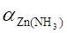
=1+10-1.00+2.27
+10-2.00+4.61 +10-3.00+7.01 +10 -4.00+9.06 =105.1
lgK'(ZnY) =
16.5-5.1-1.3=10.1
pZn'计=(10.1+1.0)/2=5.6
[Zn'] 10-5.6
[Zn2+]= ───── = ────
=10-10.7 (mol/L)
105.1
0747 lgK'(CuY) =
18.8-6.6 = 12.2
pCu计 =
(12.2+2.0)/2 = 7.1 pCu终 = pCut = 8.8
DpCu
= 8.8-7.1 = 1.7
101.7-10-1.7
Et = ──────────×100%=0.04%
────────
Ö c(Cu计)・K'(CuY)
因此可行
0748
加入49.95 mL和50.05 mL EDTA相当于化学计量点前后0.1%。
依题意: Et =±0.1%
DpM
= 1/2 =0.5
c(M计) = 0.010/2 = 0.005
根据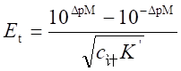
100.5-10-0.5
0.1%= ───────
─────
Ö
0.005×K'
解得 K'=109.2
0749
 =1+10-2.00+4.13+10-4.00+7.61
+10-6.00+10.48 +10-8.00+12.59
=1+10-2.00+4.13+10-4.00+7.61
+10-6.00+10.48 +10-8.00+12.59
=104.9
aCu=104.9+100.8-1=104.9
lgK'(CuY)=18.8-4.9-0.5=13.4
化学计量点 pCu' = (13.4+2.0)/2 = 7.7
pCu = 7.7+4.9 = 12.6
0.020×0.1%
化学计量点前0.1% [Cu']= ─────── =10-5.0
(mol/L)
2
pCu=5.0+4.9=9.9
[CuY] 103
1
化学计量点后0.1% [Cu']= ──────── = ──×───
[Y'] K'(CuY)
1 1013.4
=10-10.4 (mol/L)
pCu=10.4+4.9=15.3
0750
pM计=
(10.7-0.5+2.0)/2=6.1
DpM=3.8-6.1=-2.3
10-2.3-102.3
Et
= ────────────×100%=-1.6%
(1.0×10-2×1010.2)1/2
[CaY] 1.0×10-2
或 [Y']= ─────── = ───────── =10-8.4
[Ca]・K'(CaY) 10-3.8×1010.7-0.5
[Y']-[M]
10-8.4-10-3.8
Et
= ──────×100%= ───────×100%=-1.6%
cep 1.0×10-2
0751
aCu=107.7+107.2+100.8-2=107.8
lgK'(CuY)=18.8-7.8-1.3=9.7
pCu'计=(9.7+2.0)/2=5.9
pCu计=5.9+7.8=13.7
0752
=
1+10-1.00+2.37+10-2.00+4.81+10-3.00+7.31+10-4.00+9.46
=105.5
aZn=105.5+102.4=105.5
pZn'=(lgK(ZnY)-lgaY(H)-lgaZn+pc(Zn)) /2
=(16.5-0.5-5.5+2.0)/2=6.3
pZn=pZn'+lgaZn=6.3+5.5=11.8
0753
解1 加入EDTA溶液49.95 mL相当于化学计量点前0.1%,此时
0.0100×0.05
[M]= ─────── =5×10-6 (mol/L), pM=5.3
100
已知: 化学计量点前pM改变1个单位,可得化学计量点时M2+的浓度为
pM计=5.3+1.0=6.3
[M]计=5×10-7mol/L, [Y']计=5×10-7mol/L
[MY]计≈5.0×10-3(mol/L)
5.0×10-3
K'(MY)= ─────── =2.0×1010
(5×10-7)2
lgK(MY)=lgK'(MY)+lgaY(H)=10.3+0.5=10.8
即 K(MY)=1010.8
解2 按题意即化学计量点前后0.1%DpM改变2单位
即 Et=±0.1% DpM=2/2=1, c计=0.01/2=10-2.3
101-10-1
按Et公式有 0.1%= ───────, 解得 K'=1010.3
(10-2.3K')1/2
K(MY)=K'(MY)aY(H)=1010.3+0.5=1010.8
0754
aY(Mg)=1+10-1.0+8.7=107.7, aY=107.7+105.5≈107.7 lgK'(ZnY)=16.5-7.7=8.8
pZn计=(8.8+2.0)/2=5.4
= pY'计=pMgY计
又 DpM=5.7-5.4=0.3
100.3-10-0.3
Et
= ────────×100%=+0.06%
(108.8-2.0)1/2
0755
aY(Ca)=1+10-2+10.7=108.7 >aY(H) aY≈108.7
(1). lgK'(PbY) =
18.0-8.7 = 9.3
pPb计 =
(9.3+2.0)/2 = 5.7 = pY'计 = pCaY计
[Pb2+]计 = [CaY]计 = 10-5.7(mol/L)
(2). DpPb=7.0-5.7=1.3
101.3-10-1.3
Et = ────────×100%=0.4%
10(9.3-2.0)/2
[PbY] 10-2.0
[CaY]终 =
[Y']终 = ───── = ────── =10-4.3(mol/L)
[Pb]K'PbY 10-7.0+9.3
或 pCaY终 = pY'终 = pY'计+DpY = 5.7-1.3 = 4.4
0756
(1) 六次甲基四胺介质
lgK'(PbY)=18.0-6.6=11.4
pPb计=(11.4+4.0)/2=7.7
DpPb=7.0-7.7=-0.7
10-0.7-100.7
Et = ───────×100%=-0.1%
────
Ö 10-4.0+11.4
(2) HAc-NaAc介质
aPb(Ac)=1+[Ac]b1+[Ac]2b2= 101.5
lgK'(PbY)=18.0-1.5-6.6=9.9
pPb'计=(9.9+4.0)/2=7.0
pPb'终=7.0-1.5=5.5
DpPb'=5.5-7.0=-1.5
10-1.5-101.5
Et = ───────×100%=-3.2%
────
Ö 10-4.0+9.9
结论: 应选用六次甲基四胺
0757
pH=13.0时, lgaY(H)=0 lgK'(CaY)=lgK(CaY)=10.7
pCa计=(10.7+2.0)/2=6.4
10-13.0 10-26.0
pH=13.0时, aIn(H)=1+─────
+ ─────── =100.6
10-13.5 10-7.4-13.5
pCa终=lgK(CaIn)-lgaIn(H)=5.6-0.6=5.0
DpCa=5.0-6.4=-1.4
10-1.4-101.4
Et = ────────×100%=-0.1%
──────
Ö10-2.0・1010.7
0758
aY(Ca)=10-2.0+10.7=108.7》aY(H) aY=108.7
lgK'(ZnY)=16.5-8.7=7.8
pZn计=(7.8+2.0)/2=4.9
DpM=pZn终-pZn计=4.8-4.9=-0.1
10-0.1-100.1
Et = ─────────×100%=-0.06%
(10-2.0×107.8)1/2
0759 3.2
, FeF2+
0760
aAl(F)=1+10-2.0+6.1+10-4.0+11.2+10-6.0+15.0+10-8.0+17.7+10-10.0+19.4+10-12.0+19.7
= 109.9
c(Al) 102.0
[Al]= ──── = ──── =10-11.9 (mol/L)
aAl(F) 109.9
aY(Al)=1+[Al3+]K(AlY)=1+10-11.9+16.3
=104.4《aY(H)(105.5) aY=105.5
lgK'(PbY)=18.0-5.5=12.5, pPb计=(12.5+2)/2=7.3
DpPb=7.6-7.3=0.3
100.3-10-0.3
Et = ───────×100%=7×10-4%
(1012.5-2.0)1/2
0761 1. A ,
2. C , 3. B , 4.
D
0762 1. C , 2. D , 3. B , 4. A
0763 FeF2+
0764 lg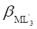
=lg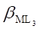
-3pKa+3pH
0765 (D)
0801 (D)
0802 (D)
0803 (D)
0804 (A)
0805 (C)
0806 (C)
0807 (A)
0808 (C)
0809 (A)
0810 (D)
0811 (B)
0812 (B)
0813 (D)
0814 (C)
0815 (B)
0816 (A)
0817 (B)
0818 (B)
0819 (C)
0820 2.0~12.0
紫红(红色+蓝色)
绿(黄色+蓝色)
0821
H2In-HIn2-In3-
(蓝色)
+
Mg2+
pH= 10
MgIn+Mg2+ (酒红色)
↓ Y
MgY+HIn (蓝 色)
0822 (1).(A);
(2).(B); (3).(D); (4).(C)
0823 K'(MY)值随pH增高而增大;
K'(MY)与溶液pH无关。
0824 三乙醇胺,
KCN;
NH4F(或乙酰丙酮),
邻二氮菲(或硫脲、Na2S2O3)
0825 6
, 5
0826 NaOH
, 12~13 , 使Mg2+沉淀 , 钙指示剂
0827 沉淀掩蔽法
0828 偏低;
无影响;
偏高
0829 三种方法所得EDTA浓度大小顺序为:
(3) > (2) > (1)
原因: (1) 水中的杂质Zn2+、Ca2+与EDTA络合 ;
(2) Zn2+、Ca2+中只有Zn2+与EDTA络合 ;
(3) 在此条件下, Zn2+、Ca2+均不与EDTA络合 。
0830 无影响
0831
|
欲以EDTA法滴定的离子
|
Mg2+
|
Ag+
|
Na+
|
Al3+
|
|
宜选择的络合滴定法
|
直接法
|
置换法
|
间接法
|
返滴法
|
0832 1:4
0833 (1) 作为缓冲剂控制pH,防止滴定中酸度增高
(2) 作为辅助络合剂,防止Zn(OH)2沉淀
0834
|
EDTA
|
pH~5,HAc或六次甲基四胺缓冲液
|
KF
|
二甲酚橙,紫红→黄
|
0835 (1)
10 (2) NH3-NH4+
(3)铬黑
T (4)KCN
(5) HCHO (6) 红 (7) 蓝 (8) 红 (9) 蓝
0836 KCN
酒石酸盐
PbY (3)
甲醛
PbY (7)
(1) (2)
Zn(CN)42-
(4)
(6) ZnY (8)
Cu(CN)2-
(5)
Cu(CN)2- (9)
0837
pH = (pKa4 + pKa5) /2
0838 1.
D 2. B
3. C 4. A
0839 乙二胺四乙酸
1:1
0840 5.10×10-4
0841
[X'] [X] ∑[Hi
X] [Cd2+]
i=1~3
化学计量点 10-5.3 10-11.2
10-6.6 10-7.1
终 点
10-4.9 10-10.8 10-6.2
10-7.1
提示: 化学计量点时
[X ']=[Zn]=10-5.3(mol/L)
10-5.3
[X] = ────── = 10-11.2(mol/L)
105.9
∑[Hi X] = 10-11.2+4.6=10-6.6(mol/L)
[CCd] 10-2
[Cd2+]= ──── = ────
= 10-7.1(mol/L)
aCd(Ⅰ)
105.1
终点时 DpX = -DpZn = -(5.7-5.3) = -0.4
终点时 [X]、∑[HiX]、[X']比相应形式在化学计量点的浓度大100.4;
而终点与化学计量点的lgaCd(Ⅰ)一致,故终点与化学计量点的[Cd2+]相同
0842 (1) aL(H)=1+10-5.5+11.6+10-11+14.2=106.1
10-2
[L]= ─── =10-8.1(mol/L)
106.1
aAl(L)=1+10-8.1+12.9+10-16.2+22.9+10-24.3+2.9
=106.7
10-2
[Al]= ─── =10-8.7(mol/L)
106.7
aY(Al)=1+10-8.7+16.1=107.4>aY(H)
aY = aY(Al) =107.4
lgK(ZnY')=16.5-7.4=9.1 pZn计=(9.1+2.0)/2=5.6
100.1-10-0.1
DpZn=5.7-5.6=0.1
Et= ────────×100%=+0.01 %
10(9.1-2.0)/2
(2)化学计量点时 [Y']=[Zn]=10-5.6
[Y'] 10-5.6
[Y] = ──── = ────── = 10-13.0
aY(Al)
107.4
∑[HiY]=[Y]aY(H)=10-13.0+5.5=10-7.5(mol/L)
i=1-6
0843
aY(Ca)≈10-2.0+10.7=108.7>aY(H) aY≈aY(Ca)=108.7
lgK(PbY')=18.0-8.7=9.3 pPb计=(9.3+2.0)/2=5.7=p[CaY]计
101.3-10-1.3
DpPb=7.0-5.7=1.3
Et= ────────×100%=+0.4%
10(9.3-2.0)/2
[Y]计=[CaY]/aY(Ca)=10-5.7/108.7 =10-14.4(mol/L)
|
|
[Pb]
|
[Y]
|
[CaY]
|
|
化学计量点
|
10-5.7
|
10-14.4
|
10-5.7
|
|
终 点
|
10-7.0
|
10-13.1
|
10-4.4
|
求终点[Y]和[CaY]:
方法1.由pPb值求: DpPb=-DpY=1.3 故终点[Y][CaY]均较化学计量点时相应
形式浓度大101.3倍
[PbY]
方法2.由K(PbY)= ───── 式求[Y], 再求[CaY]
[Pb][Y]
10-2.0
[Y]= ────── =10-13.0
(mol/L) (与方法1差别系舍入误差引起的)
1018.0-7.0
[CaY]=1010.7-2-13.0=10-4.3(mol/L)
0844 aphen(H) =1+10-5.0×105.0=100.3
[phen]=10-2.0/100.3=10-2.3(mol/L)
aZn(phen)=1+10-6.9×1017.6=1010.7
[Zn2+]=10-2.0/1010.7=10-12.7(mol/L)
aY(Zn)=1+10-12.7+16.5=103.8≤aY(H)
(掩蔽很好)
aY(Ca)=1+10-2.0+10.7=108.7>aY(H)
lgK'(PbY)=18-8.7=9.3
pPb计=(9.3+2)/2=5.7
DpPb=7.0-5.7=1.3
101.3-10-1.3
Et= ────────×100%=0.5%
──────
Ö 10-2・109.3
0845
a. lgK(MY)-lgK(NY)=20.0-18.0=2.0<6.0
所以不能准确滴定M离子
b. aA(H)=1+108.0×10-8.0+108.0+5.0×10-16.0=2
[A2-]=0.20/2=0.10
aM(A) =1+102.0×10-1.0+105.0×10-2.0=1+10+103.0≈102.0
aN(A) =1+105.0×10-1.0+1010.0×10-2.0=1+104.0+108.0≈108.0
[N]=10-2.0/108.0=10-10.0
(mol/L)
aY(N)=1+1018.0×10-10.0=108.0
aY=102.3+108.0-1≈108.0
lgK'(MY)=20.0-3.0-8.0=9.0
lgK'(MY)=9.0>8.0
故此条件下能准确滴定M离子
0846
90
c(Ca)=
───── =0.036=10-1.4(mol/L)
100×25
10
c(Pb)=
────── =10-2.8(mol/L)
267×25 8
1.8×10-5
[Ac-]= ──────────×0.15=0.1 (mol/L)
10-5+1.8×10-5
aPb(Ac) = 1+10-1.0+1.9+10-2.0+3.3 = 101.5
aY(H) = 106.6
aY(Ca) = 1+10-1.4+10.7=109.3
aY = aY(H)+aY(Ca) ≈ aY(Ca) = 109.3
lgK'(PbY) =
18.0-1.5-9.3 = 7.2
lg[c(Pb)K'(PbY)]
= 7.2-2.8 = 4.4 << 6
可见此滴定不可能获得准确的结果
0847
lgK(CaY')=lgK(CaY)-lg(aY(H)+aY(Mg)-1)
=10.7-lg(0+K(MgY)[Mg2+])
10-10.7
=10.7-lg(108.7×──────)
(10-2.0)2
=10.7-2.0=8.7
lgcK(CaY')=6.7>6
可准确测定
0848
终点时, [Ca2+]=5.0×10-3 (mol/L)
aY(Ca)=1+1010.7×5.0×10-3=1+108.4≈108.4
aY=105.5+108.4-1≈108.4
lgK'(ZnY)=16.5-8.4=8.1
lgc(Zn2+)K'(ZnY)=-2.0+8.1=6.1
故能准确测定Zn2+
0849
24.32
0.05000×4.10×────
1000
w(Mg)= ─────────────×100%=3.99%
25.00
0.5000×─────
100.0
65.38
0.05000×13.40×────
1000
w(Zn)= ──────────────×100%=35.04%
25.00
0.5000×────
100.0
63.55
0.05000×(37.30-13.40)× ────
1000
w(Cu)= ─────────────────×100%=60.75%
25.00
0.5000 ×───────
100.0
0850 K2Na[Co(NO2)6]中 n(K):n(Co)=2:1
2×c×V×M(K)
w(K)= ──────────×100%
m
2×0.05000×20.00×40.00
= ──────────────×100%
0.2500×1000
= 32.00%
0851
0.02023×25.64×118.7
w(Sn)= ─────────────×100% =55.22%
0.1115×1000
[0.05161×20.00-0.02023´(13.75+25.64)]×207.2
w(Pb)= ──────────────────────×100% = 43.73%
0.1115×1000
0852 每100 mL血清含钙量
0.001015 mol/L×0.246
mL×40.08g/mol
m(Ca)
= ────────────────────×100 mL
1
100mL×───── ×1000 mL/L
106mL/L
= 0.10 g/L×100 ml
= 10 mg
0853
0.1041 mol/L×25.41
mL×24.31 g/mol
(1) w(Mg)=
───────────────────×100%
25.00
mL
6.614g×───────×1000
mL/L
500 mL
=19.44%
(2) 因每摩尔碱土金属可中和2摩尔HCl,故每片药片可中和盐酸
2×0.1041 mol/L ×25.41 mL ×36.45
g/mol 500
─────────────────────×───
10片× 1000ml/L
25.00
= 0.3857( g/片) = 385.7 mg/片
0854
Bi3+滴定后溶液中总H+为
0.1×25+0.02×15×2=3.1 (mmol)
加入六次甲基四胺(A)后,与H+反应成HA,为维持pH5.0,六次甲基四胺必过量,总需六次甲基四胺的量为
[HA]V
3.1
cV= ────── = ───────── =5.4 (mmol)
x(HA)
10-5.0
───────
10-5.13+10-5.0
其质量m为:
5.4×140
m = ───────
= 0.76 (g)
1000
0855
EDTA标液
Zn2+标液
Zn2+标液
↓
↓ 返滴 ↓
Bi3+
BiY
pH=1 加过量EDTA,△
NH4F,△
Al3+ ───→ Al3+ ────────→ AlY ────→ AlF63-
Pb2+二甲酚橙
Pb2+ pH=5-6,冷滴 PbY 冷滴 PbY
测Bi
测Al+Pb
测Al
两者之差即Pb
0856
KCN pH=10 NH3-NH4+
Cu(CN)2-
Cu2+、Zn2+、Pb2+ ──────────────→
Zn(CN)42-
酒石酸 EBT,EDTA滴定 PbY2- (测得Pb2+含量)
甲醛 Cu(CN)2-
Cu(CN)2-
───→ Zn2+ ───────→ ZnY2- (测得Zn2+含量)
PbY2- EDTA滴定 PbY2-
0857 1. 不能在酸性液中加KCN,否则生成剧毒挥发HCN气体。应当先调至碱性后加KCN
2. 三乙醇胺应当在酸性中加入,否则Al3+水解不与三乙醇胺络合
3. 不该用NaOH,而采用NH3调pH至10,因前者不具缓冲作用
4. 测定Mg2+应采用铬黑T而不是二甲酚橙作指示剂
0858 1. 量取NH4+-NH3缓冲液5 mL,加入少许铬黑T,若显红色,滴加EDTA至刚变蓝色。
2. 将欲检验的水加入到上述溶液中
A. 若溶液仍呈蓝色表明水质好,无金属离子
B. 若溶液又变红,表明水中有金属离子。再滴加EDTA,若又变蓝且变色较敏锐,表明是Ca2+,Mg2+等, 若仍为红色或变色不敏锐表明是Fe3+,
Al3+,Cu2+等。
0859
EDTA
Mg2+
↓
↓
Zn2+ pH=10氨性缓冲液 KCN
1.试液 ────────→ ZnY ──→ Zn(CN)42+ + Y
Mg2+ 铬黑T指示剂
MgY
↓
测Zn,Mg总量
MgY
测Zn量
EDTA
EDTA
↓
↓
Zn2+ pH=10氨性缓冲液
HCHO
2.试液 ──────────→ Zn(CN)42- ───→ Zn2+
Mg2+ KCN、铬黑T
MgY ↓
测MgY量
ZnY
测Zn量
3. 取二份试液
EDTA
↓
Zn2+ pH=5,HAc-Ac-缓冲液
A. ─────────→ ZnY 测Zn量
Mg2+ 二甲酚橙指示剂
EDTA
↓
Zn2+ pH=10氨性缓冲液
B. ────────→ ZnY
MgY 测Zn,Mg总量
Mg2+ 铬黑T
0860
20.00+5.00
50.00
[5.00×0.2507-─────(5.11×0.04919)]×───×194.2
10.00
20.00
w(咖啡因)= ────────────────────────────
0.3811×1000
×100% = 79.63%
0861
250.0
[25.00×0.02031-───(0.01212×5.89)]×2×254.2
50.00
w(苯巴比妥钠)= ────────────────────────×100%
0.2438×1000
= 31.45%
2701 (D)
2702 (D)
2703 (C)
2704 (C)
2705 (B)
2706 (A)
2707 (B)
2708 (C)
2709 (C)
2710 (D)
2711 (C)
2712 (B)
2713 (D)
2714 (A)
2715 (D)
2716 (A)
2717 lgaY(H)减小(或EDTA酸效应减小);
lgaM(OH)增大(或金属离子水解效应增大)
2718 aM = aM(A)+aM(B)+aM(C)-2
2719 作缓冲剂控制pH, 作辅助络合剂防Pb2+水解
2720 [ML]+[ML2]+[M(OH)]+[M(OH)2]+[M]
; [MY]+[ML]+[ML2]+[M(OH)]+[M(OH)2]+[M]
2721 作辅助络合剂防止Mn(OH)2沉淀, 作还原剂防止生成能氧化铬黑T的Mn3+
2722
[NA]+[NY]+[N] [NA]>[NY]>[N]
2723 0.040 mol/L
2724
PbY, Zn(CN)42-
2725 aY(H)=[Y']/[Y], aM(L)=[M']/[M]
2726 104.0,
10
2727 4.4 , H5Y+和H4Y,
Y4- 2729
lgaY(H)～pH , lgaY(H)
2728 有关; 无关
2729 lgaY(H)～pH , lgaY(H)
2730 六, 分子中两个氨基上的氮原子具有孤对电子, 在强酸性溶液中接受两个质子, 故为六元酸。
2731 络合剂一般为有机弱酸配位体,由于H+存在(或酸度提高)使配位体参加主反应(或滴定反应)的能力降低,这一现象称为酸效应。
aY(H)=1+b1[H+]+b2[H+]2+…+b6[H+]6
或
[H+] [H+]2
[H+]6
aY(H)=1+ ───
+ ─────── +…+ ───────────
K a 6 K a 6・K a 5
K a6・K a5・…・K 1
2732 (D)
2733 (A)
2734 (C)
2735 (C)
2736 (A)
2737 (D)
2738 9.9
2739
6.7, 13.3, 2.00
2740 2.0,
6.4, 6.4
2741
8.0 8.0
2742
5.0(2.0+3.0) 8.0(6.5+1.5)
2743
6.6, 11.3, 6.6
2744
|
|
pPb
|
|
化学计量点前0.1%
|
化学计量点
|
化学计量点后0.1%
|
|
|
|
|
8.5
|
|
|
4.3
|
6.4
|
8.5
|
2745 不改变; 减小0.5; 减小1
2746 减小1单位; 减小0.5单位; 不改变
2747 aM(L); aY(H)
2748 减小; 增大
2749 0.4
2750 5.4
2751 在滴定过程中不断释放出H+,即 M+H2Y2-=MY+2H+ 酸度不断增大。为了控制适宜的酸度范围,需加入缓冲溶液。
2752 大于5
2753 0.2
2754 (B)
2755 水溶液不稳定易被氧化, 作稀释剂
2756 (C)
2757 抗坏血酸, 三乙醇胺
2758 控制酸度
2759 好, aY(H) (注:此时aY(N)=1+K(NY)c(N)/aN(A)≈1)
2760 (C)
2761 (B)
2762 (B)
2763 1. Al3++H2Y2-=AlY-+2H+
2. AlY-+6F-+2H+=AlF63-+H2Y2-
3. Zn2++H2Y2-=ZnY2-+2H+
2764 低
2765 高
2766 无影响
2767 1,
二甲酚橙,
Bi3+
2768
5~6, 六次甲基四胺缓冲液(HAc缓冲液)
Pb2+(Zn2+) 二甲酚橙
2769 Fe2+,
Fe(CN)64-
2770 滴定Mg2+必须在pH 10时进行,此时MgNH4PO4将又重新沉淀致使无法滴定,故需先加EDTA络合,再调pH,而后再回滴之。
2771
10, 铬黑T, 5, 二甲酚橙
2772 三乙醇胺,
10, 铬黑T, 12, 钙指示剂
2773 EDTA在水中的溶解度小, 而Na2H2Y的溶解度较大; 两个N原子接受了两个质子。
2774 2:1
2775
MgY, 红, 蓝
2776 CuY和PAN ,
CuY + M + PAN = MY + Cu-PAN , Cu-PAN + Y = CuY + PAN
2777
0.00765×19.30×207.2
w(Pb)=
────────────×100% =
7.50%
0.4080×1000
0.02060×28.60×65.38
w(Zn)=
────────────×100% =
9.44%
0.4080×1000
(0.02060×42.20-0.00765×19.30)×24.31
w(Mg)=
────────────────────×100% = 4.300%
0.4080×1000
2778 (1) 不需准确加入;
(2) 必须保持1:1精确关系,Mg2+少则测定结果偏低,多则偏高;
(3) 在此溶液中加入氨性缓冲液及铬黑T,应当在加半滴0.02mol/L EDTA后呈蓝色, 而加半滴0.02mol/L Mg2+呈红色,若不合格则应滴加EDTA(或Mg2+)使合格。
4701 (
C )
4702 ( A
)
4703 ( B )
4704
解：( 1 ) aM(NH3) = 1
+ b1[NH3] +…… + b4[NH3]4 = 1 + 102.0 ´ 10-2.0
+ 105.0 ´ 10-4.0
+ 107.0 ´ 10-6.0 + 1010.0 ´ 10-8.0 = 122
aM(OH) = 1 + b1[OH] + LL + b4[OH]4 = 1 + 104.0
´ 10-5.0
+ 108.0 ´10-10.0
+ 1014.0 ´ 10-15.0 + 1015.0 ´ 10-20.0 » 1
aM(NH3)
>> aM(OH) , 由aM(NH3)可知，主要存在形式为M(NH3)42+。
[ M(NH3)42+
] = b4[NH3]4×cM / aM(NH3) =
(102 / 122) ´ 0.10 = 8 ´ 10-2 mol / L
( 2 ) aM(OH) = 1 + 104.0 ´ 10-1.0 + 108.0 ´ 10-2.0
+ 1014.0 ´ 10-3.0 + 1015.0 ´ 10-4.0 = 1011.3
aM(NH3) =
122 (同(1) )
<< aM(OH)
由aM(OH)可知，主要存在形式为M(OH)3-和M(OH)42-。
4705 ( A )
4706 ( D )
4707 10-5.1；10-5.6
4708 5.1；5.1；5.6
4709 (
D )
4710 (
B )
4711 ( C )
4712 (
B )
4713 (
C )
4714:1.0 ´ 10-3 mol / L
4715 10.5；7.5
4716 (
C )
4717 (
A )
4718 ( 1 ) [NH3]计 = 0.10 mol / L
aCu(NH3) = 1
+ b1[NH3] + LL + b4[NH3]4 = 1 + 104.31 ´ 10-1.0
+ 107.98 ´ 10-2.0 + 1011.02 ´ 10-3.0
+1013.82
´ 10-4.0
= 109.82
aCu = aCu(NH3) + aCu(OH) -1 = 109.82 + 101.7
-1 = 109.82
lg K¢(CuY) = 18.8 -
9.82 - 0.5 = 8.5 , (pCu¢)计 = (8.5 + 2.00 )/2 = 5.2
( 2 ) lg K¢(MgY) = 8.7 -
0.45 = 8.2 , (pMg)计 = ( 8.2 + 2.00 )/2 = 5.1
( 3 )若要进行分别滴定，可调溶液pH为5~6，此时lg K¢(CuY) >>
lgK¢(MgY)，从而单独滴定Cu2+，然后调至pH≈10，可滴定Mg2+。
4719
化学计量点时，c (Cu2+) = 1.0 ´ 10-2 mol / L，[NH3]计 = 0.1 mol / L
aCu(NH3) = 1
+ b1[NH3] + LL + b5[NH3]5
=
1 + 104.31 ´ 10-1.0 + 107.98 ´ 10-2.0 + 1011.02
´ 10-3.0
+ 1013.32 ´ 10-4.0 + 1012.86 ´ 10-5
= 109.34
aCu = aCu(NH3) + aCu(OH) - 1 = 109.34 +
101.7 » 109.34
lg K¢(CuY) = lg K(CuY)
- lgaY(H) - lg aCu = 18.8 - 0.5 - 9.34 = 9.0
pCu¢ = [ lg K¢(CuY) + pc(Cu)
]/2 = ( 9.0 + 2.0 )/2 = 5.5
pCu = pCu¢ + lgaCu = 5.5 + 9.34 = 14.8
4720 (
B
)
4721 H6Y2+ ；H2Y2-
4722 (
D ) 4723
( B )
4724 (
D
)
4725 ( D )
4726 Et =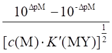
0.001=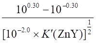
K¢(ZnY) = 108.35
Lg aY »lg aY(Ca) = 16.5 - 8.35 = 8.15
aY(Ca) = 1 + K(CaY) × [Ca2+]终
108.15
» 1010.7
´
[Ca2+]终
[Ca2+]终 = 108.15 / 1010.7
= 2.8 ´ 10-3 (mol / L)
故原混合溶液中Ca2+的最高允许浓度为c(Ca2+) = 2.8 ´ 10-3 ´ 2 = 5.6 ´ 10-3
(mol / L)
4727
Et =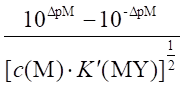
0.001=
K¢(ZnY) = 108.35
lgaY »lg aY(Mg) = 16.5 - 8.35 = 8.15
aY(Mg) = 1 + K(MgY) × [Mg2+]终
108.15
» 108.7
´
[Mg2+]终
[Mg2+]终 = 10-0.55 =
0.28 (mol / L)
故原混合溶液中Mg2+的最高允许浓度为c(Mg2+) = 0.28 ´ 2 = 0.56 (mol /
L)
4728 (
B
)
4729 0.3
4730 aZn(NH3) = 1
+ b1[NH3] + LL + b4[NH3]4
= 1 + 102.37 ´ 0.20 + 104.81 ´ (0.20)2
+ 107.31 ´ (0.20)3 + 109.46 ´ (0.20)4 =
106.7
aZn = aZn(NH3) + aZn(OH) - 1 = 106.7 + 102.4
-1 = 106.7
lg K¢(ZnY) =
lg K(ZnY) - lg aY(H) - lg aZn = 16.5 - 0.45 - 6.7 = 9.35
(pZn¢)t =
(pZn)t - lgaZn = 12.2 - 6.7 = 5.5
(pZn¢)计 =[lg K¢(ZnY) ´ pc(Zn)
]/2 = (9.35 + 2.00 )/2 = 5.7
DpZn¢ = (pZn)终¢ - (pZn¢)计 = 5.5 - 5.7 = -0.2
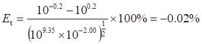
4731 (
1 )钙试剂作指示剂
由EDTA的pKa可知，pH = 13.0时，lg aY(H) = 0
lg K¢(CaY) = lg K(CaY)
= 10.7 , (pCa)计 =( 10.7 + 2.3 )/2 = 6.5
pH = 13.0 , aIn(H) = 1 + 1013.5 ´ 10-13.0 + 1013.5 + 7.4 ´ (10-13.0)2
= 100.6
(pCa)终 = lg K¢(MIn) = lg K(CaIn)
- lgaIn(H) = 5.6 - 0.6 = 5.0
DpCa = 5.0 - 6.5 =
-1.5 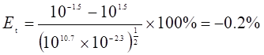
4732 (
1 ) lg K¢(CaY) = 10.69 - 0.45 = 10.24 , (pCa)计 =( 10.24 + 2.00 )/2 =
6.12
aEBT(H) = 1 + 10-10.0+11.6 + 10-20.0 + 11.6 + 6.3 =
101.6
(pCa)终 = lg K(Ca-EBT) -
lg a EBT(H) = 5.4 - 1.6 = 3.8
DpCa = 3.8 - 6.12 =
-2.3 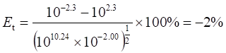
( 2 ) lg K¢(MgY) = 8.7 -
0.45 = 8.25 , (pMg)计 =( 8.25 + 2.00 )/2 = 5.1
(pMg)终 = lg K(Mg-EBT) -
lg a EBT(H) = 7.0 - 1.6 = 5.4
DpMg = 5.4 - 5.1 =
0.3 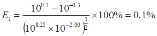
( 3 )说明尽管K(CaY)比K(MgY)大，但因EBT与Ca2+显色不很灵敏[ (pCa)终 = 3.8 ]，而EBT与Mg2+显色灵敏[ (pMg)终 = 5.4 ]，DpCa > DpMg，故滴定Ca2+的误差比Mg2+大。
4733
已知DpM = 0.20 , Et = 0.1% , 则lg [c计K¢(MgY)] > 6
终点时，[ Hg2+ ]终 = 1 ´ 10-24 mol / L，c (Hg2+) = 1.0 ´ 10-3
mol / L
aHg(CN) = c (Hg2+) / [Hg2+] = ( 1.0 ´ 10-3
) / ( 1 ´ 10-24 ) = 1 ´ 1021
aHg(CN) = 1 + b4[CN-] » b4[CN-]4
1 ´ 1021
= 1 ´ 1041.0 ´ [CN-]4
即
[CN-]终 = 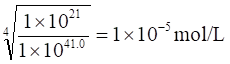
所以终点时溶液中游离NaCN的浓度为1´ 10-5
mol / L
4734
lg
K¢(ZnY) = 16.5 - 6.5 = 10.0
(pZn)计 = ( 10.0 + 3.0 )/2 = 6.5
采用XO时，
DpZn
= 4.8 - 6.5 = - 1.7
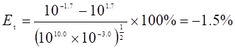
采用双硫腙时， DpZn = 5.5 - 6.5 = -1.0
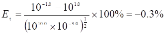
由终点误差可知，采用双硫腙为指示剂时，能获得较高的准确度。
4735 黄色； 12.4； < 12
4736
lg
K¢(MgY) = 8.7 - 0.45 = 8.25
(pMg)计
=( 8.25 + 3.00 )/2 = 5.62
aEBA(H) = 1 + 10-10.0 + 13.0 + 10-20.0 + 13.0 + 6.2 =
103.0
(pMg)t(EBA)
= lg K¢(Mg-EBA) = 7.2 - 3.0 = 4.2
DpMg = 4.2 - 5.62 =
-1.42
(EBA)
aEBT(H) = 1 + 10-10.0 + 11.6 + 10-20.0 + 11.6 + 6.3 =
101.6
(pMg)t(EBT)
= lg K¢(Mg-EBT) = 7.0 - 1.6 = 5.4
DpMg = 5.4 - 5.62 =
-0.22
(EBT)
因为DpM 越小，滴定误差越小，故应选用EBT为指示剂。
4737 因为Fe3+极易水解( pH »4 )，若在pH = 6.0的条件下进行滴定，此时绝大部分Fe3+已水解形成沉淀，从而无法进行滴定。因此，不能单纯地从K¢(MY)的大小来判断能否准确滴定，还要考虑金属离子的水解酸度。Fe3+和EDTA络合物在pH = 1.5时还很稳定 ( K¢(Fe(III)Y )较大 )，能准确滴定。
4738
在pH = 10~12含有Ca2+的溶液中，当加入CuY和PAN时，发生以下反应：
蓝色 黄色
红色
滴定之前，由于Ca2+置换出CuY中的Cu2+，进而生成Cu-PAN，故显红色。滴入EDTA时，先与Ca2+反应，当滴定至终点时，过量1滴EDTA即可从Cu-PAN中夺出Cu2+，生成CuY和游离的PAN，终点时显浅绿色(蓝色+黄色)。故CuY和PAN可作为滴定Ca2+的指示剂。
4739
不需要加入准确浓度的CuY。因为加入的CuY和滴定至终点时生成的CuY的物质的量是相等的。
4740
aY(H)减小(或酸效应系数减小)；此时aY(N) > aY(H)，而K¢(MY)的大小由aY(N)决定，aY(N)基本上与pH无关。
4741
六次甲基四胺，5.0 ~5.5，Zn2+，二甲酚橙； 1.0，Bi3+，二甲酚橙。
4742
10.0，Mg2+，铬黑T； 5.0，Zn2+，二甲酚橙。
4743
pH
>> pK(HF) , 故 [ F- ]终 = 10-2.0 mol / L
aAl(F) = 1 + b1[F-] + LL + b6[F-]6
=
1 + 106.1 ´ 10-2.0 + 1011.2 ´ 10-4.0 + 1015.0
´ 10-6.0 + 1017.7 ´ 10-8.0
+ 1019.6 ´ 10-10.0 + 1019.7
´ 10-12.0 » 1010.0
[ Al3+
] = c (Al3+) / aAl(F) =
1.00 ´ 10-2 / 1010.0 = 10 -12.0 mol / L
aY(Al) = 1 + K(AlY) [ Al3+ ] = 1 + 1016.1 ´ 10-12.0
= 104.1
aY = aY(H) + aY(Al) -1 = 105.5 + 104.1 -1 » 105.5
lg K¢(ZnY) = lg K(ZnY)
- lg aY = 16.5 - 5.5 = 11.0
lg [c计K¢(ZnY)] = -2.0 +
11.0 = 9 >> 6，可以准确滴定Zn2+。
4744
aC2O4(H) = 1 + 104.3 ´ 10-2.5
+ 105.6 ´ 10-5.0 =101.8
因为题设生成Fe(C2O4)33-形式络合物
c(C2O42-) = 0.5 - 3 ´ 0.1 = 0.2 mol /
L
[ C2O42-
] = c(C2O42-) / aC2O4(H) = 0.2 /101.8
= 10-2.5 mol /L
aFe(C2O4) = 1 + b3[C2O42- ]3 = 1 + 1018.5
´10-2.5
´3 =1011.0
[ Fe3+
] = c(Fe3+) / aFe(C2O4) = 0.1/1011.0 = 10-12.0 mol / L
4745
加入过量BaCl2后，溶液中存在如下沉淀平衡：
当用EDTA返滴定过量的Ba2+至蓝色终点时，BaSO4沉淀离解出的Ba2+又与铬黑T显色，故又返为红紫色。为此，可将生成的BaSO4沉淀过滤、洗净，然后再取滤液进行返滴定，这样，就可正确判断终点并获得较好的准确度。
4746
( D ) 4747 ( D
) 4748 ( C
) 4749 ( B
) 4750 减小；增大
4751 3.3
´ 10-4; 6.7
´ 10-4
4752
终点时，aCN(H) = 1 + 10-10.0 ´ 109.0
= 1.1
[CN-]
= 1.1 ´ 10-5 / 1.1 = 10-5.0 mol / L
aHg(CN) = 1 + b4[CN-]4 = 1 + 1041.0
´
(10-5.0)4 = 1021.0
[ Hg2+
] = c(Hg) / aHg(CN) = 1.0 ´ 10-3 / 1021.0
= 10-24.0 mol / L
aY(Hg) = 1 + K(HgY)[Hg2+] = 1 + 1021.7 ´ 10-24.0
»1
说明Hg2+可完全被掩蔽。
此时，lg K¢(MgY) = lg K(MgY) - lg aY(H) = 8.7 - 0.45 = 8.25
lg [c计K¢(MgY)] = -2.0 +
8.25 = 6.25 >
6;
故可以准确滴定Mg2+。
4753
化学计量点时,[ Zn2+ ]计 = 5.0 ´ 10-3 mol
/ L
aT(Zn) = 1 + 1012.1 ´ 10-2.3 = 109.8
aT = aT(H) + aT(Zn) - 1 = 108.1 + 109.8 -1 = 109.8
lg K¢(CuT) = lg K(CuT)
- lg aT = 20.4 - 9.8 = 10.6
(pCu)计 = (10.6 + 2.3 )/2 = 6.4
4754
解一：aF(H) = 1 + 103.18 ´ 10-2.0
= 16
题设生成FeF52-形式络合物，c(F-) = 0.80 - 5 ´ 0.10 = 0.30
(mol/L)
[ F-]
= c(F-) / aF(H) = 0.30 / 16 = 10-1.7
(mol / L)
aFe(F) = 1 + b5[F-]5 = 1 + 1015.8
´ 10-1.7´5 = 107.3
[ Fe3+
] = c(Fe3+) / aFe(F) =
10-1.0 / 107.3 =10-8.3 (mol / L)
解二：aF(H) = 16 c(F-) = 0.80 - 0.10 ´ 5 = 0.30 (mol /
L)
b5¢ = [FeF5]
/ ( [Fe3+][F-]5 ) = b5 / a5F(H) = 1015.8 / (16)5
[Fe3+]
= 0.10 ´ 165 / ( 0.305 ´ 1015.8 ) = 10-8.2
(mol / L)
4755
aZn = aZn(NH3) + aZn(OH) -1 = 105.0 + 102.4
-1 = 105.0
lg K¢(ZnY) = lg K(ZnY)
- lg aY(H) - lg aZn = 16.5 - 0.45 - 5.0 = 11.05
(pZn¢)终 = (pZn)t - lg
aZn = 12.2 - 5.0 = 7.2
(pZn¢)计 = [ lg K¢(ZnY) + pc计 ]/2 =( 11.05 + 2.00 )/2
= 6.52
DpZn¢ = 7.2 - 6.52 =
0.68 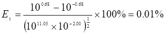
4756
[Ba2+]
= Ksp / [CrO42-] = 1.2 ´ 10-8
aY(Ba) = 1 + K(BaY)[Ba2+] = 1.9
aY = aY(H) + aY(Ba) - 1 = 3.7 = 100.57
lg K¢(CaY) = lg K(CaY)
- lg aY = 10.12 >
8; 可以掩蔽Ba2+，而准确滴定Ca2+。
4757
r (Mg) =0.00500 ´ 12.0 ´ 24.31´10-3/10.0 = 1.46 ´ 10-4 (g / mL)
r (Ca) =0.00500 ´ ( 23.5 - 12.0 ) ´ 40.08´10-3/10.0 = 2.30 ´ 10-4 (g / mL)
4758 (
A )
4759 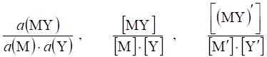